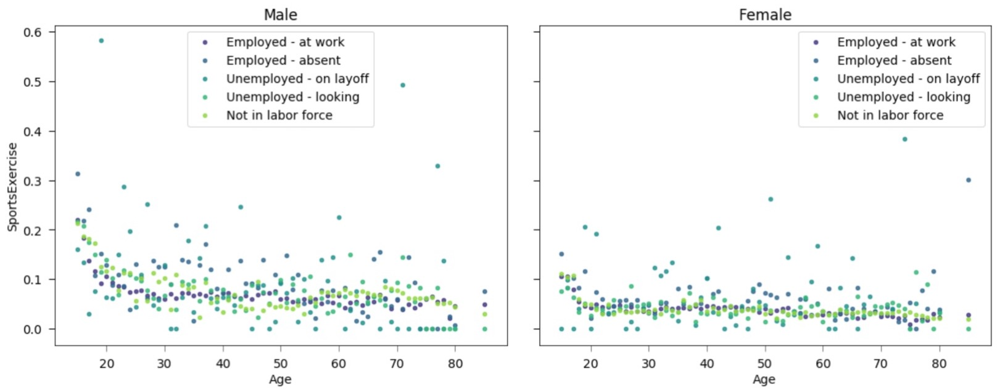

I'm Megan, and I am currently completing an MS in Computer Science as well as a PhD in Physics. Welcome to my site! I have a passion for exploring the intersection of data science and the physical systems all around us. From investigating the cosmological history of the universe to analyzing the efficiency and socio-economic fairness of transit systems. I am a deeply curious individual and love to use computer science and math to tease out mysteries hidden within data whether that take the form of the US Census, 100+ TB of astronomical data or patient CT scans.
I am currently completing an M.S. in Computer Science at the University of Wisconsin - Madison (est. Winter 2022). My main areas of interest are in Machine Learning and Data Science. If you are interested in the course work that I have completed please check out my Acedemics Page! As an example of such crousework, for my Data Visualization class is a tool I created: Sub Group Explorer Tool in an effort to address a common issue in data science, which is finding interesting sub groups within a large dataset. It takes as input a dataset and outputs multivariate visualizations of sub groups. The tool can be used in an exploritory manner to look at the statistical distributions and correlations between data, as well as a visualization tool once the interesting relationships have been determined. Alternatively, if you have specific data that you want to anazlyze from the onset, you can skip the exploritory phase. Shown below is an example of one such multi-variate sub group visualiztion: 